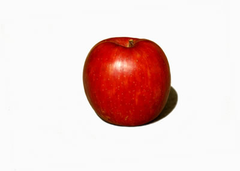
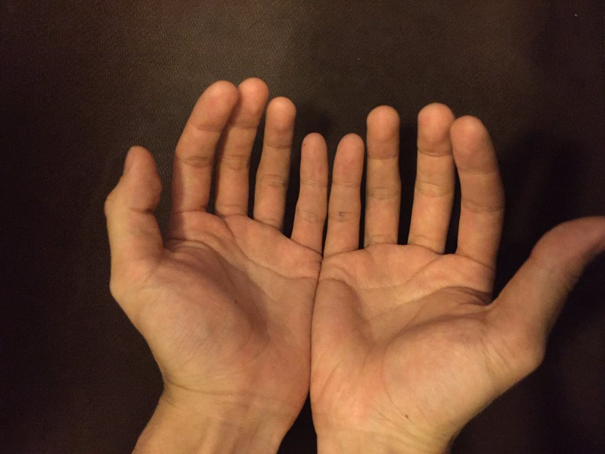

じゃんけんがヤバい 言葉と分節化
進路相談
「将来何しようかなあ」
大学に入ればやりたいことが決まるだろう。そう思って入学した某大学。しかしどんどん勉強するにつれ興味のある分野は増えるばかりで、「僕はこれをやりたい！」と言えるものをひとつ決めることが余計難しくなってしまった。
強いて言えば、僕はいろいろなことを考えてみんなと共有し、議論をするのが好きである。疑問に思っていたことが友達と話すことで氷解したり、逆に友達の相談に乗ってあげたりすることはとても楽しいことだと思う。
しかし、考えれば考えるほど、われわれは何もわかっていない。より正確には、どんな考え事も「僕は結局何もわかっていない」という結論に落ち着いてしまう。僕は友達とコミュニケーションをして何を得ているのだろうか。そもそも、コミュニケーションを取れているのかすら怪しい。僕が勝手にそう思っているだけかもしれないし、なんなら僕がそう思っているのかもわからない。
—ｺﾝｺﾝ
「—どうぞ」
「先生、今日はわざわざ時間を取っていただきありがとうございます」
「いえいえ、ところで今日はどうしましたか」
「進路相談に乗っていただきたくて」
「なるほど」
「コミュニケーションに興味があるんですよ」
「それは言語によるコミュニケーションですか？非言語によるものですか？それによってアプローチが変わってくるけど」
「というと？」
「言語によってコミュニケーションをするのはヒトの特徴と言えます」
「そうなんですか？」
「たとえばホタルはルシフェリンの発光によって非常に原始的なコミュニケーションをとります」
「それは言語ではないのですか？」
「言語ではありません。言語の特徴として、『概念』を表せる点が挙げられます」
「例えばハチの8の字ダンスは餌場の『方角』や『距離』などを伝えます。それは『概念』ではないのですか？」
「そういう点では、ミツバチのダンスは言語により近いものであると言えます」
「はあ」
では「非言語」とは何なのであろうか。「概念」を表さないコミュニケーションはあるのか。というかそれはコミュニケーションと言って良いのだろうか。
形式言語
「形式言語」という考え方がある。自然言語のような個別的なものに対し、それらを包括的に議論するものである。形式言語において「言語」は「語」の集合である。では「語」は何かというと、「アルファベット」の列である。そして「アルファベット」は何かというと、「空でない有限集合」である。
$$ L \subset \Sigma^* = \{ \langle \sigma_1, \sigma_2, \dots \rangle | \sigma_i \in \Sigma \} $$ここで$\Sigma$が「空でない有限集合」である。つまり、英語なら$\Sigma = (a,b,c,\dots)$であるし、日本語なら$\Sigma = (あ,い,う,\dots)$であるし、コンピュータにとっては$\Sigma = (0, 1)$である。つまり形式言語の考え方ではアルファベットは何でもいいのである。別に「りんご」を表すのに「り」「ん」「ご」である必要はない。べつに「ぬ」「ョ」「♪」であってもいい。「ぬョ♪」があの赤い果物を意味してもよいのである。
「〇〇ちゃん、どのフルーツが食べたい？」
「んーあたしはねー...」
「ぬョ♪」
犬はポチですか？
それでは我々は言語によって何をしているのであろうか。「りんご」でも「ぬョ♪」でもいいが、それによって我々は何を言えているのであろうか。
もし、あなたがこの質問をされたら、どのように答えるだろうか。
「りんごって何ですか？」
実はとても難しい問題である。例えば、スーパーに行って「これがりんごです」と指差したとしよう。確かにその赤い果実は「りんご」であるのであろう。しかし、それでは「りんごとは何か」を言い表せていない。それ以外のものにも、りんごは存在するからである。ポチは犬だが、犬はポチではないのだ。
ではこうしよう。この世の中に存在するすべてのりんごを集めてきて「これがりんごです」と言ったとする。現実問題可能かどうかは置いておいて、できたとすればそれがりんごのような気もする。しかしこれでは、これから生まれるりんごや過去に食べられてしまったりんごを言い表せない。明日実をつけた果実をもいでも、それはりんごではないことになってしまう。
困った。というかそもそも無限に考えることができる「りんご」を有限の文字数で記述できるのであろうか。情報理論の考案者、クロード・シャノンの理論によれば、情報量$H(X)$を持つ$N$個の独立同分布の確率変数は、圧縮して$NH(X)$ビットに上から任意に近づけることができるが、$NH(X)$ビット以下に圧縮された時、事実上確実に情報が失われる(情報源符号化定理)。
$$ \lim_{N\to\infty} \frac{H(S^N)}{N} \leq L \leq \lim_{N\to\infty} \frac{H(S^N)}{N} + \varepsilon $$つまり、ある情報を記述するとき、完全に表現しようとするとある一定の文字数を下回ることはできないということである。例えば私達の身長を表現しようとする。「私156cmなの〜」などという人も、実はぴったり156cmではない。実際は156.2754902052772651119054623...cmであったりするわけである。現実に存在する「長さ」は恐らく連続量なので、何兆桁言ったところで正確には記述できない。
分節化
困ってしまった。われわれが今まで考えてきた「りんご」はなんだったのだろう。これはりんごではないのか？？？
否、これは間違いなく「りんご」である。ここに活路がある。われわれは、「これはりんごですか？」という質問に対して答えることができる。
つまり、りんごの実体を考えていく外延的な発想はやめて、この世に「りんご」と「りんごでないもの」の「境界線」を引くのである。この「線」のことを「りんご」と呼ぼう。
すると話は楽である。「私156cmなの〜」は、身長が"厳密に"「$155.5 \leq x < 156.5$cmである」ということである。つまり言葉は有限のブラックボックスである。ブラックボックスは有限でも、その中にはには無限の種類のものを入れることができ、それらが境界の内か外かを判別できるのである。
再びりんごの例に戻ると、「りんご」という言葉は「形が丸いかどうか」「色が赤いかどうか」などというフィルターがいくつも続いている形をしているということである。このフィルターをすべて通過したものはすべてりんごになってしまう、ということは先程述べたとおりである。
じゃんけん
言語が何たるかがわかったところで話を戻すと、つまりどんなものでも言語になりうるのである。われわれは普段は意識していないが、ただの人の前で開いた手のひらも「5」だったり「グー」だったり「飴ちゃんくれ」だったりするわけである。
手のひら一つ取ったって、指の角度は連続量だから、理論上どんなものでも表せるはずである。片手で数えられるのが$2^5-1=31$までという話もあるが、あれだって中間の角度を採用すれば$3^5-1=242$まで数えられるのである。
つまり、いくらでもヤバいじゃんけんを考えることができる。

なんと手が101種類もあるじゃんけんである。考えた人は暇人としか言いようがない。もはや曼荼羅のような崇高さに畏怖の念すら覚える。
「おい磯野、じゃんけんしようぜ」
じゃーんけーん

「お前『力』かよ〜〜〜〜俺『平和』だから負けたわ〜〜〜〜」
「お前それチョキ？」
「違うしチェーンソーだし」